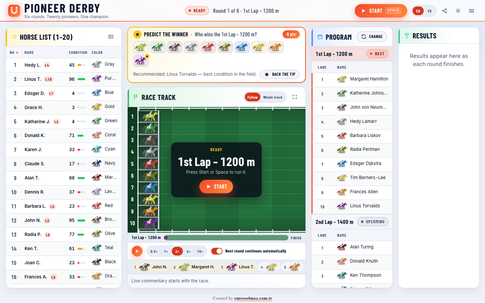
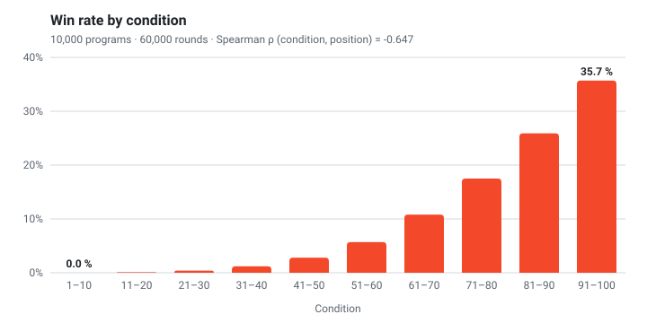
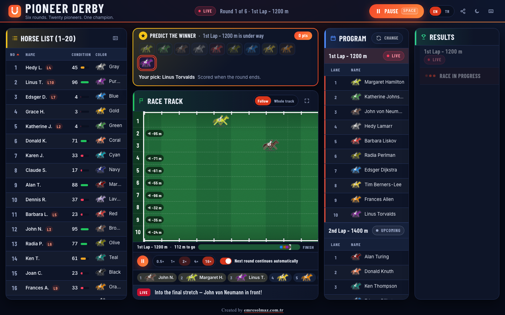

{{company}}Front-end Developer Case Study · Emre Solmaz
Yirmi bilgisayar öncüsünün altı turda yarıştığı, tarayıcıda çalışan etkileşimli bir at yarışı oyunu. Vue 3, TypeScript ve Pinia ile; tekrar üretilebilir bir yarış motoru, gerçek ölçekli yayın kamerası, iki dil ve ölçülmüş kalite kapılarıyla.

Case, 20 atlık bir havuzdan her turda 10 at seçilen, 1200 m ile 2200 m arasında altı turluk bir yarışı; Generate ve Start/Pause düğmeleriyle, sonuçları tur bittikçe sırayla gösteren, atların görünür biçimde hareket ettiği bir oyun olarak tarif ediyor. Beklenen: Vue, Pinia/Vuex, bileşen tabanlı tasarım ve büyük bir proje gibi temiz kod; bonus olarak unit, E2E ve görsel test.
Bu çalışmada zorunlu maddelerin hepsini karşıladım ve fazlasını ölçülebilir kılmaya çalıştım: her gereksinimin bir kimliği var, her kimlik en az bir testle bağlı ve bu bağ CI'da denetleniyor. Oyun mantığı arayüzden bağımsız, saf TypeScript olarak yazıldı; aynı tohum (seed) her zaman aynı yarışı üretiyor, bu yüzden yarışlar paylaşılabiliyor ve testler kararlı.
| Kimlik | Case maddesi | Nasıl karşılandı |
|---|---|---|
| R1, T2 | Vue, bileşen tabanlı tasarım |
Vue 3, <script setup lang="ts">, Composition API. Özellik başına
klasör; ortak parçalar shared/ altında.
|
| R2, C1–C3 | 20 at, benzersiz renk, kondisyon 1–100 |
domain/horses.ts: 20 at, 20 adlandırılmış ayrı renk, tohumdan üretilen 1–100
kondisyon. Atlar bilgisayar öncülerinin adını taşıyor.
|
| R3, C4–C6 | Generate: 6 tur, her turda 20'den 10 rastgele at, 1200–2200 m |
domain/schedule.ts. Sabitler tek yerde:
domain/constants.ts (ROUND_DISTANCES,
HORSES_PER_ROUND). Her turda 10 ayrı at, property testle doğrulandı.
|
| R4 | Start: turlar tek tek koşulur |
Durum makinesi (domain/race-machine.ts): idle, ready, running, paused,
intermission, finished. Tek düğme Start / Duraklat / Devam.
|
| R5 | Sonuçlar, tur bittikçe sırayla | Resmi sonuç, turun son atı çizgiyi geçtikten sonra yayınlanır. Ayrıca yarış sürerken bitiren atlar canlı bir blokta sırayla görünür (bkz. bölüm 9). |
| R6 | Atlar görünür biçimde hareket eder |
requestAnimationFrame ile yalnızca transform; gerçek ölçekli
kamera, koşu animasyonu, bitiren at durur.
|
| R7 | Büyük proje gibi temiz kod |
Katmanlı mimari ve eslint-plugin-boundaries ile zorlanan bağımlılık yönü,
strict TypeScript, any yok, 14 mimari karar kaydı (ADR).
|
| T1 | Pinia / Vuex |
Pinia, setup store'lar: horses, schedule, race,
prediction, settings.
|
| B1, B2, B3 | Unit, E2E, görsel test | Vitest + fast-check, Playwright, Playwright ekran görüntüsü (Linux referansları CI'da üretilir). |
Bağımlılık tek yönlüdür ve ESLint ile derleme öncesinde denetlenir: bir katman yalnızca altındakini bilir.
App.vue, yerleşim, başlık, alt bilgi, ilk açılış ekranı, tanıtım
turu. Her şeyi bir araya getirir.
horses, track, program, results,
prediction, race. Bir özellik diğerini içe aktaramaz; ortak olan
shared/'a taşınır.
mulberry32), at üretimi, program, yarış motoru, istatistik, öneri, yayın
akışı.
Base*), ortak composable'lar, tipli analitik
katmanı, yardımcılar.
Tasarım sistemi hazır bir UI kitine dayanmıyor: kapsamlı SCSS değişkenleri (design token) ve
Base bileşenleri var; açık ve koyu tema aynı token'lardan türüyor (ADR 0007).
Tüm rastgelelik domain/random.ts içindeki tohumlu üreteçten geçer (Math.random
yasaktır). Bir tohumdan her kaygı kendi akışını türetir: atlar, program ve her turun yarışı
ayrı akıştır; bir turu yeniden oynatmak diğerlerine bağlı değildir. Bu sayede
?seed=1234
bağlantısı aynı oyunu açar, E2E ve görsel testler kararlıdır ve sonuçlar animasyon olmadan
test edilebilir.
p(u) = u + Σ a·(sin(2πfu + φ) − sin φ) / 2πf, tam sayı
f için p(1) = 1; Σa < 1 atın geri gitmesini önler.
positionAt(profil, süre) saf bir fonksiyondur. Bitiş sırası yarış başlamadan
hesaplanır, arayüz yalnızca "t anında at X nerede?" diye sorar (ADR 0001).
10.000 tohumlu programın (60.000 tur) benzetimi: kondisyon arttıkça kazanma oranı tekdüze artıyor (kondisyon 1–10: %0,0; 91–100: %35,7). En iyi kondisyonlu at turların %40,4'ünü kazanıyor (rastgele olsa %10); ilk üç kondisyonun dışındaki bir at ise %18,8'ini kazanıyor: favoriler çoğunlukla ama her zaman değil kazanıyor. Bu, istatistiksel bir testle CI'da denetleniyor.

| Store | Sorumluluk |
|---|---|
horses |
20 atın listesi (tohumdan türetilir). |
schedule |
6 turluk program: tur indeksi, mesafe, 10 atın kulvar sırası. |
race |
Durum makinesi, geçerli tur, yarış saati, sonuçlar, hız, tohum, otomatik geçiş. Tek yazma noktası. |
prediction |
Kazananı tahmin et: seçim, puan, öneri (3 puan kazanan, 1 puan podyum). |
settings |
Tema ve at listesi daralması; localStorage'da kalıcı. |
Bileşenler store'dan storeToRefs ile okur ve yalnızca store eylemleriyle
değiştirir.
Yarış saati kontrol noktalarıyla tutulur (ADR 0005, 0002):
geçen süre = kontrolNoktasındakiSüre + (şimdi − kontrolNoktasıZamanı) × hız.
Store yalnızca gerçek olaylarda değişir (başlat, duraklat, hız değişimi, tur sonu); tur başına
tek zamanlayıcı vardır. Animasyon döngüsü saati okur, positionAt ile konumu
hesaplar ve atların transform değerini doğrudan DOM'a yazar (ADR 0008).
Duraklatma saati dondurur, devam ettirme kaldığı yerden sürer, hız değişimi atları yerinde
bırakır.

<dialog> içine taşır; bileşen yeniden
oluşturulmadığı için yarış kesilmez.
Üç kademe: masaüstünde at listesi · pist · program + sonuçlar; tabletde pist üstte ve altında sekmeler; telefonda pist üstte ve alt sekme çubuğu. Masaüstünde at listesi, atları kendi renginde gösteren dar bir şeride katlanır ve pist genişler. Yatay sayfa kaydırması yoktur (360 px'te bile).
G,
Space, R, hız tuşları, ?); aria-live ile
sonuç duyuruları; prefers-reduced-motion saygı görür (hareket azaltmada tüm
giriş animasyonları kapanır).
tr.json tipi en.json'a karşı
denetlenir (eksik anahtar derleme hatasıdır). Sıra sayıları ve birimler
Intl ile; domain metin değil kod döndürür (örneğin öneri gerekçe kodları).
domain/summary.ts, yalnızca
biten sonuçları okur).
?debug=1 paneli.| Katman | Araç | Ne kanıtlıyor |
|---|---|---|
| Unit ve bileşen | Vitest, Vue Test Utils | Oyun kuralları, store geçişleri (sahte saatle), bileşenlerin ARIA sözleşmeleri. |
| Özellik tabanlı | fast-check | Her tohum için tüm kurallar: 20 benzersiz at, 10 ayrı at/tur, mesafeler, bitiş sırası. |
| İstatistiksel | Vitest + benzetim | Kondisyon arttıkça ortalama sıra iyileşir; küçük atlar da kazanabilir. |
| E2E | Playwright (sahte saat, tohum) | Program üretimi, başlat/duraklat, tur sırası, dil, tahmin, tanıtım turu, yeniden oynatma, klavye ve yatay kaydırma olmaması. |
| Görsel | Playwright ekran görüntüsü | Masaüstü, tablet, telefon × açık, koyu × TR, EN (14 ekran, Linux referansları CI'da). |
| Erişilebilirlik | axe | Boş, koşan, biten durumlar, tur ve diyaloglar: 0 ciddi ihlal. |
| Performans | Playwright, Lighthouse CI | Medyan kare ≤ 20 ms, uzun görev yok; Lighthouse üretim derlemesinde 3 koşu. |
Test adları gereksinim kimliğiyle başlar ([C5] …);
scripts/traceability.ts bunlardan "gereksinim → test" tablosunu üretir ve CI, her
gereksinimin kapsandığını denetler (33/33; docs/TRACEABILITY.md).
Her PR'da sekiz iş ayrı bir zorunlu kontroldür; hepsi geçmeden birleştirme yapılamaz.
| Kapı | Eşik | Ölçülen |
|---|---|---|
| Lint ve biçim | 0 hata, mimari sınırlar | temiz |
| Tip denetimi (vue-tsc, strict) | 0 hata | temiz |
| Unit kapsamı | domain %95, store %90 | domain %100, store %99 |
| E2E ve görsel | hepsi yeşil | 63 test, 14 ekran |
| Kanıt raporları | izlenebilirlik 33/33, benzetim yeniden üretilir | geçti |
| Paket boyutu (gzip) | JS 120, CSS 30, tümü 650 KiB | JS 92, CSS 14, tümü 480 KiB |
| Lighthouse (medyan, 3 koşu) | performans 90; erişilebilirlik ve en iyi uygulamalar 95 | 95–96 · 100 · 100 · SEO 100 |
Lighthouse, ilk ziyaretçi gibi açtığı sayfada gerçek bir hata yakaladı: tanıtım turu
kütüphanesi (driver.js), görünmez bir yardımcı öğeye izin verilmeyen bir
aria-expanded koyuyordu. Düzeltildi ve tüm sayfayı kapsayan bir axe testiyle
korunuyor.
main her zaman yayına hazır; her faz kısa ömürlü
bir dalda, küçük Conventional Commit'lerle yapılır ve CI yeşilse birleştirilir. Fazlar:
iskelet ve CI, domain, state, arayüz iskeleti, özellik bileşenleri, pist, ürün katmanı,
kanıt katmanı, teslim.
main her birleşmede yayınlanır ve her PR için
önizleme bağlantısı üretilir; netlify.toml hash'li dosyaları bir yıl önbelleğe
alır ve güvenlik başlıklarını ekler. Yayını CI karar verir, Netlify yalnızca onaylananı
yayınlar.
docs/REQUIREMENTS.md).
| Konu | Karar |
|---|---|
| "1 ile 20 arası at" ve "toplam 20 at" | Her zaman tam 20 at üretilir; "1–20" liste numaralamasıdır (örnek ekran görüntüsüyle uyumlu). |
| Aynı at birden çok turda koşabilir mi? | Evet; her tur 20'den bağımsız 10 at seçer, tur içinde tekrar yoktur. |
| Start turları kendiliğinden mi ilerletir? | Varsayılan olarak evet: tur arası 6 sn geri sayım ve "Şimdi başlat". Anahtar kapatılırsa her tur "Sonraki tur" bekler (sınırsız süre, tahmin için). |
| Sonuçlar ne zaman görünür? | Resmi sonuç turun son atı bitince yayınlanır (R5). Yarış sürerken, çizgiyi geçen atlar ayrı bir "canlı" blokta sırayla görünür; sıralamaları bitiş süresi sabit olduğu için bir daha değişmez. Resmi sonuç bu blokun yerini alır. |
| Yarış süresi | Gerçek tempo (1200 m ≈ 73 sn); varsayılan oynatma 2×, 0,5× ile 16× arası seçilebilir. |
| Bahis | Yok; tahmin yalnızca puanla çalışır. |
Projeyi, Anthropic'in komut satırı kodlama asistanı Claude Code ile birlikte, eşli
programlama biçiminde geliştirdim. Bunu açıkça belirtmek istiyorum; çünkü süreç repoda da
görünüyor: commit'lerde Co-Authored-By satırı, çalışma kurallarını anlatan
CLAUDE.md ve .claude/ klasörü duruyor.
| Ben | Claude Code |
|---|---|
| Case'i yorumladım, kapsamı ve önceliği belirledim; belirsiz noktalar için karar verdim (bölüm 9). | Kararları kodlayıp testlerini yazdı, alternatifleri ve riskleri sundu. |
| Her ekranı kendim açıp denedim; tasarım, davranış ve metin geri bildirimlerini verdim (hız seçenekleri, katlanan at listesi, tanıtım turu, sonuçların akışı gibi). | Geri bildirimleri uyguladı, ekran görüntüsü alıp sonucu kendisi de kontrol etti. |
| Mimari kararları onayladım, her pull request'i ve her fazın çıktısını gözden geçirdim; birleştirme kararını ben verdim. | Kararları ADR olarak kaydetti; her PR'ı şablonuyla açtı. |
Kalitenin kişiye değil sürece bağlı olması için şu güvenceleri kurdum:
main'e doğrudan yazılmaz.
RaceTrack.vue, 1.246 satır) davranışı değiştirmeden bölündü:
14 görsel test iki sürüm arasında piksel farkı vermedi ve yeni parçalar için birim testleri
eklendi.
nvm use # Node 24 (.nvmrc) npm ci npm run dev # http://localhost:5173 npm run verify # lint + format + tip + unit npm run test:e2e # Playwright (bir kez: npx playwright install chromium) npm run build && npm run check:bundle npm run test:lighthouse
| Belge | İçerik |
|---|---|
docs/REQUIREMENTS.md |
Gereksinimler, kimlikler, belirsizlikler ve kararlar |
docs/ARCHITECTURE.md |
Yığın, klasör yapısı, yarış motoru, durum makinesi, yerleşim |
docs/adr/ |
14 mimari karar kaydı |
docs/TRACEABILITY.md |
Gereksinim → test tablosu (üretilir) |
Teşekkürler. Soru ya da geri bildirim için: emresolmaz.com.tr